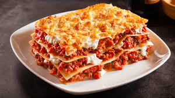
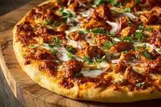
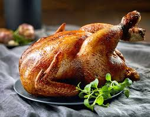
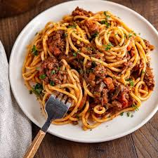

FOOD RECIPY CARD







CHICKEN TIKKA
Protein:
\(1\text{ lb}\) (approx. \(500\text{g}\))
boneless chicken, cut into \(1.5\text{-inch}\)
Marinade Base: \(1/2\) cup thick Greek yogurt or hung
Flavor/Aromatics: \(1.5\text{ tbsp}\) Ginger-Garlic paste, \(1\text{ tbsp}\) lemon juice.Spices: \(1\text{-}2\text{ tsp}\)
Kashmiri red chili powder, \(3/4\text{ tsp}\) roasted cumin powder, \(2\text{ tsp}\) coriander powder, \(1\text{ tsp}\) garam masala, \(1\text{ tsp}\) chaat masala, \(1\text{ tbsp}\) kasuri methi (dried fenugreek leaves).Cooking Fat: \(1\text{ tbsp}\)
mustard oil or butter for basting.
BIRYANI
Fat: Ghee (clarified butter) provides the most authentic aroma, though vegetable oil is a common substitute.
Dairy: Plain Yogurt (Curd) is used for the marinade to tenderize the meat.
Aromatics: Onions (sliced and fried until golden brown, known as Birista), Ginger-Garlic Paste, and Fresh Mint and Coriander leaves.
Essential SpicesYou can use a pre-made Shan Biryani Masala or National Biryani Masala.
For a homemade blend, you will need:Whole Spices (for Rice & Gravy)Ground Spices (for Marinade)Bay Leaves (Tez Patta)Red Chili PowderGreen & Black CardamomTurmeric PowderCinnamon SticksGaram MasalaClovesCoriander PowderStar AniseCumin PowderShahi Jeera (Caraway Seeds)Salt (to taste)Optional Extras for FlavorSaffron: Soaked in warm milk for the signature golden color and fragrance.
Kewra Water: A few drops of Screwpine essence added during steaming for a restaurant-style floral scent.Potatoes: Often included in Karachi or Sindhi styles.
Dried Plums (Aloo Bukhara): Adds a unique tangy sweetness common in Pakistani biryani.Would you like a step-by-step cooking guide for a specific style, like Hyderabadi or Karachi biryani?16 sitesChicken Biryani Recipe02-Sept-2022 — 2 cups basmati rice (aged rice only) 2 tablespoon ghee or Oil.
1 large onion sliced thinly. ¼ to ½ cup mint leaves chopped fine (a...Swasthi's RecipesHow To Cook Chicken Biryani Properly | No Shortcuts18-Mar-2026 — wow bismillah welcome everybody to another episode of Latif Inspired Ramadan Kharim today I'm going to make you something very ver...19mYouTube·Latifs Inspiredbiryani ingredients list - Healthifybasmati 500g.
chicken, beef, goat, pork, fish, or eggs. 500g. large onions, sliced. 2. medium tomatoes, chopped.
2. - 2. gre...HealthifyMeShow all
BURGER
Patty: 1 lb ground beef (often 80/20 lean-to-fat ratio).
Bun: Hamburger buns (regular, brioche, or sesame).
Seasoning: Salt, black pepper, garlic powder, onion powder.Fat: Oil or butter for cooking.
Common Toppings & CondimentsCheese: Cheddar, American, Swiss, or Havarti slices.Produce: Lettuce (iceberg or romaine), sliced tomato, sliced red or white onion, pickles.
Sauces: Ketchup, mustard (yellow or Dijon), mayonnaise, Worcestershire sauce.
Homemade Patty Enhancements
LAZANIA
Meat SauceMeat:
1 lb Ground beef and/or Italian sausage.Tomato Base: 24-28 oz Marinara or tomato sauce, plus 3-6 oz tomato paste.
Aromatics: 1 Onion (diced), 2-3 cloves Garlic (minced).
Herbs/Seasoning: 1 tsp Italian seasoning, Dried basil/oregano, Salt, Black pepper.Optional: 1 tbsp Olive oil, 1 tsp Sugar (to reduce acidity).Cheese MixtureRicotta: 15 oz Whole milk ricotta cheese.Egg: 1 Large egg (beaten, to bind the cheese).
Parmesan: \(\frac{1}{4}\) to \(\frac{1}{2}\) cup Grated Parmesan cheese.
Herbs: 2 tbsp Fresh parsley (choppe
PIZZA
Core Dough IngredientsFlour: 2½ to 4 cups all-purpose or Tipo '00' flour.
Yeast: 1-2 tsp active dry or instant
yeast Water: ~½ - 1 cup warm water.Oil: 1-2 tbsp olive oil.
Seasoning: 1 tsp sugar/honey and 1 tsp salt.
Sauce & CheeseSauce: Pizza sauce, marinara, pesto, or olive oil.Cheese: Mozzarella (shredded or fresh), Parmesan, Provolone, Fontina, or Feta.
CHICKEN ROAST
Core Dough IngredientsFlour: 2½ to 4 cups all-purpose or Tipo '00' flour.
Yeast: 1-2 tsp active dry or instant yeast.
Water: ~½ - 1 cup warm water.
Oil: 1-2 tbsp olive oil.Seasoning: 1 tsp sugar/honey and 1 tsp salt.
Sauce & CheeseSauce: Pizza sauce, marinara, pesto, or olive oil.
Cheese: Mozzarella (shredded or fresh), Parmesan, Provolone, Fontina, or Feta.
SPAGITTY
Essential IngredientsPasta: 1 lb (16 oz) spaghetti noodles.Tomato Base: Canned tomato sauce, crushed tomatoes, or tomato paste.Aromatics: Garlic (freshly minced) and onions.
Fat: Extra virgin olive oil.Seasoning: Salt, black pepper, and Italian seasoning (oregano, basil).
Common Additions & VariationsMeat: Ground beef, Italian sausage, or ground turkey.
Sweetness/Acidity Balance: Sugar (or carrots) to balance tomato acidity.
Veggies: Diced bell peppers, mushrooms, or carrots.Finishing: Fresh basil, parsley, and grated Parmesan or Pecorino Romano cheese.
Liquid: Pasta water (reserved from boiling) to thicken the sauce.
For a classic, simple Spaghetti al Pomodoro, rely on high-quality olive oil, fresh cherry tomatoes, garlic, and basil.
For a sweeter, Filipino-style, banana ketchup is used.
MOMOS
Momo Dough (Wrapper)All-purpose flour (Maida): 1.2 cupsSalt: ½ teaspoonOil: 1.2 teaspoons (optional, for softness)Water: Lukewarm, as needed (approx. \(\frac{1}{2}\) cup)Vegetarian Filling (Veg Momos)Vegetables: Finely chopped or grated cabbage, carrots, French beans, capsicum, and onionsAromatics: Finely minced ginger and garlicSeasonings: Soy sauce, black pepper, saltOptional: Soya granules (for texture), chopped coriander (cilantro), green chiliesChicken/Meat FillingMeat: Ground chicken, pork, or lambAromatics: Finely chopped onions, ginger, garlic, and spring onion greensSeasonings: Soy sauce, oyster sauce (optional), sesame oil, salt, pepperKey Preparation DetailsDough Resting: Knead into a firm, smooth dough and rest for at least 30 minutes.
Cooking: Steamed for 10–15 minutes, or pan-fried/deep-fried.
Serving: Typically paired with spicy tomato-sesame sauce (chutney) or Schezwan sauce.